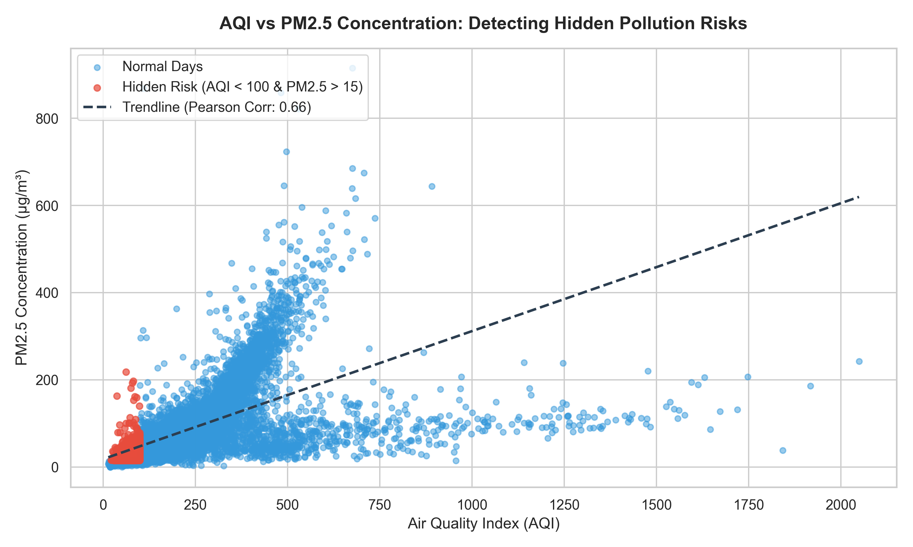
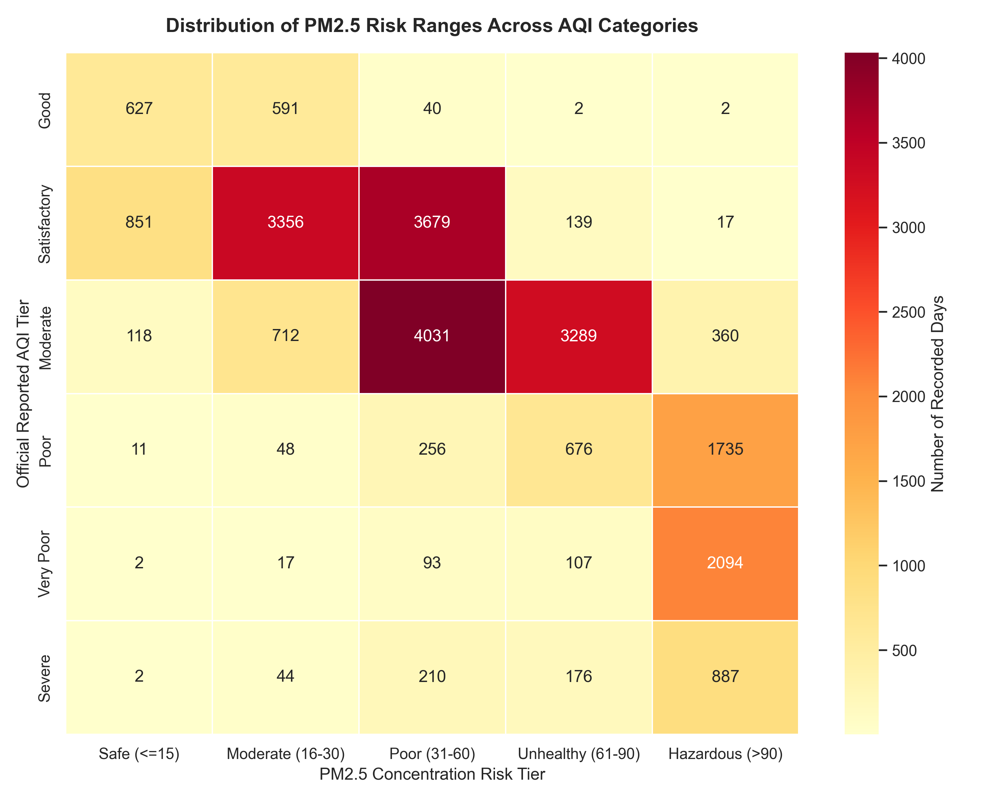
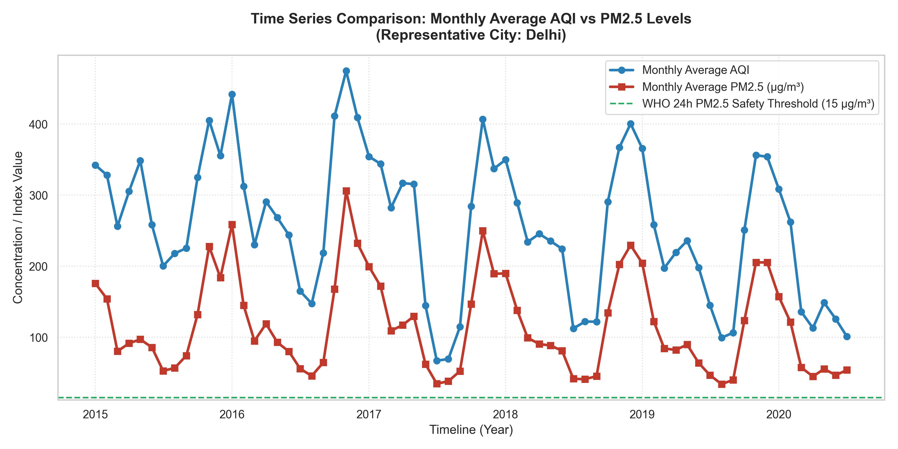
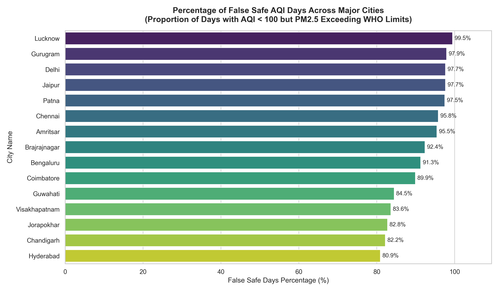
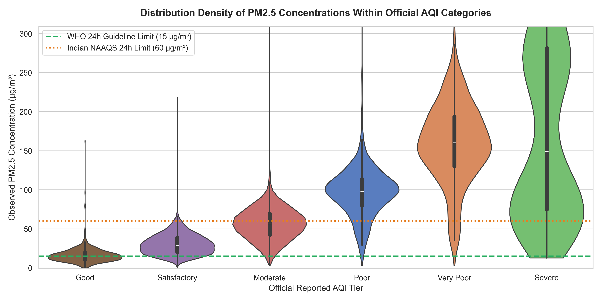
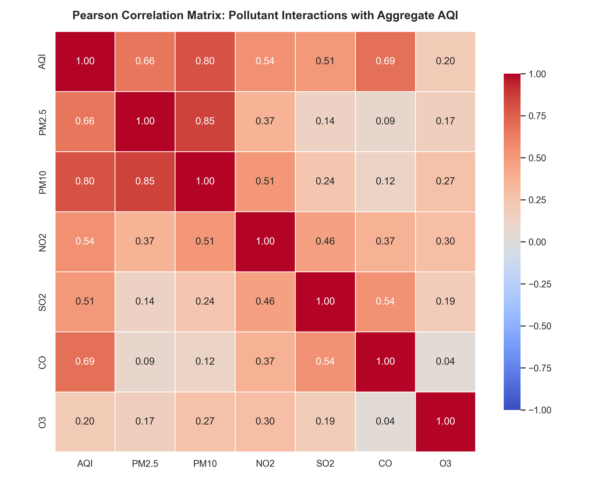

Evaluating the Reliability of Aggregate Air Quality Indices (AQI) Against Primary Fine Particulate Guidelines

This graph compares reported aggregate AQI indices directly against corresponding primary PM2.5 observations. Standard data points are plotted in light blue, while critical "False Safe" conditions are explicitly flagged in red. A linear trendline tracks overall behavioral scaling, proving that while AQI correlates broadly with particulate concentrations, strict sub-index alert mechanisms routinely fail to isolate acute local fine-particulate exposure.

This cross-tabulation matrix details the precise daily distribution intersection between statutory reported AQI categories and true biological PM2.5 exposure tiers. The internal numerical annotations display day counts per grid cell. The visual clustering clearly exposes significant non-zero overlaps where residents breathing air rated officially as "Satisfactory" are simultaneously sustaining Unhealthy or Poor PM2.5 ambient loads.

Tracking air quality over prolonged multi-year frames reveals severe winter season spikes driven by regional meteorology. By graphing monthly average trajectories alongside a permanent green WHO reference line, we observe robust continuous trend tracking while demonstrating that average baseline PM2.5 levels persistently hover far above recommended safe respiratory margins throughout the vast majority of the timeline.

This bar chart evaluates different regional urban centers strictly on their empirical percentage of unflagged exposure days. The values denote the proportion of days out of total officially safe days where PM2.5 concentrations exceeded safe physiological limits. Cities ranked at the top present the highest public health masking risk, showing that relying exclusively on broad aggregate AQI broadcasts provides inadequate individual protection.

Figure illustrates the distribution of observed PM2.5 concentrations across official Indian AQI categories using violin density plots. The width of each violin represents the frequency distribution of PM2.5 values within a particular AQI tier, while the internal markers indicate the central tendency and spread of the data. Reference lines corresponding to the WHO 24-hour PM2.5 guideline (15 µg/m³) and the Indian National Ambient Air Quality Standard (60 µg/m³) are included for direct comparison against health-based thresholds. The visualization reveals substantial overlap in PM2.5 exposure distributions across AQI categories, demonstrating that similar AQI labels can correspond to significantly different particulate pollution levels. Notably, even the “Good” and “Satisfactory” AQI categories frequently exceed the WHO recommended safety limit, indicating the presence of hidden exposure risks despite officially acceptable AQI conditions. Higher AQI categories exhibit broader and more elevated PM2.5 distributions, reflecting increased variability and severity of particulate pollution events. Overall, the figure highlights the limitations of relying solely on categorical AQI classifications for health risk assessment and supports the argument that AQI values may not fully capture true particulate exposure severity.

Pearson correlation analysis demonstrates that AQI is predominantly associated with particulate pollutants such as PM10 and PM2.5, while exhibiting substantially weaker relationships with gaseous pollutants like ozone.This suggests that aggregate AQI metrics may inadequately capture the complexity of multi-pollutant exposure risks.